At The Fat Old Man Furnishings, woodworking isn’t just a hobby—it’s a craft built on passion, patience, and a deep respect for the material. Each piece starts with carefully chosen hardwood, selected not just for strength, but for the character and story in the grain.
From handcrafted charcuterie boards to crosses and decorative pieces, every item is shaped, sanded, and finished by hand with an attention to detail that only comes from someone who truly loves the work. No shortcuts, no mass production—just time, care, and craftsmanship in every step.
Many pieces feature striking wood combinations, making each one completely unique. These aren’t just things to use—they’re pieces to appreciate, display, and keep for years to come.
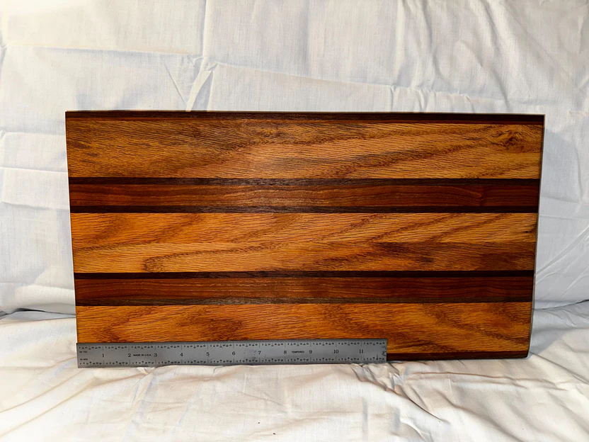
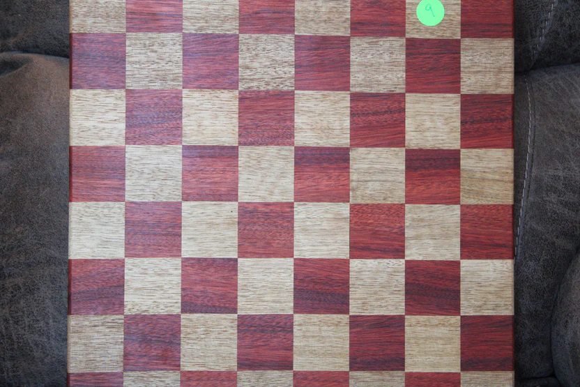
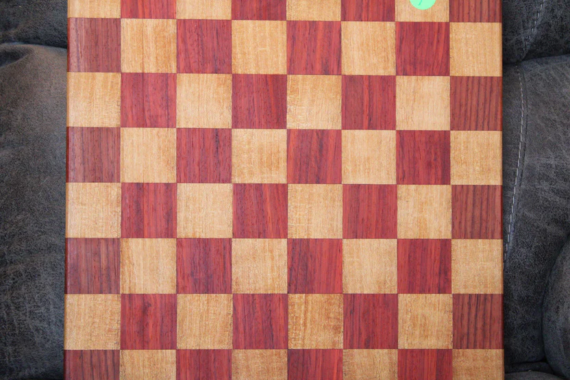
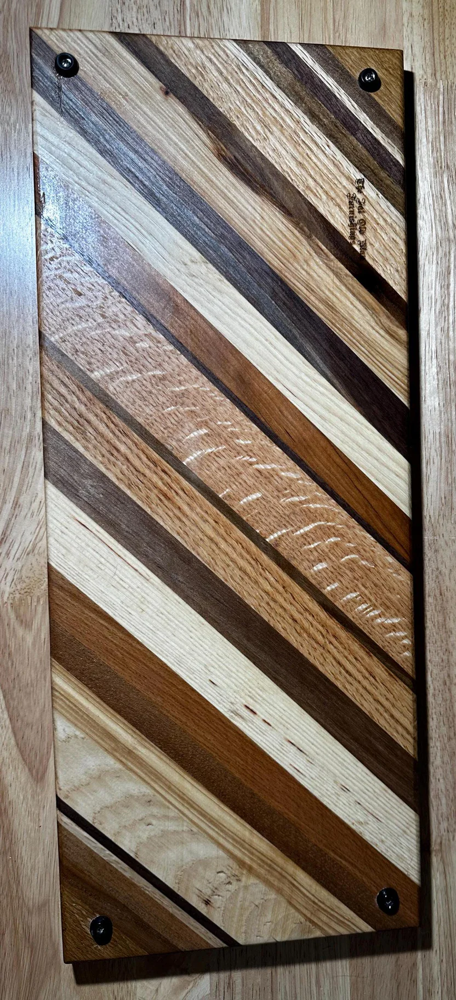
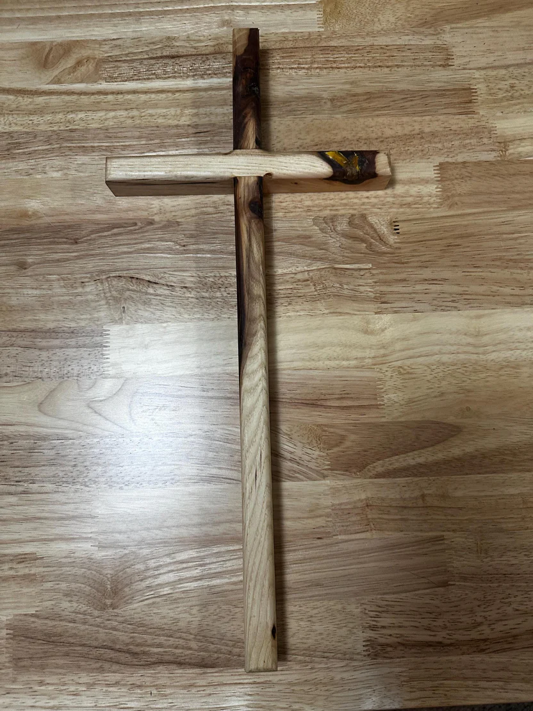
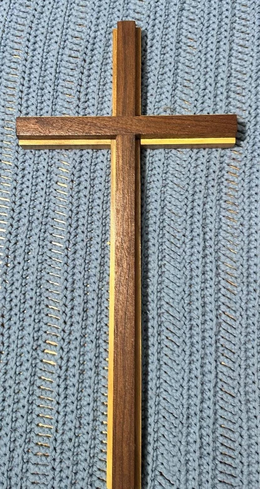
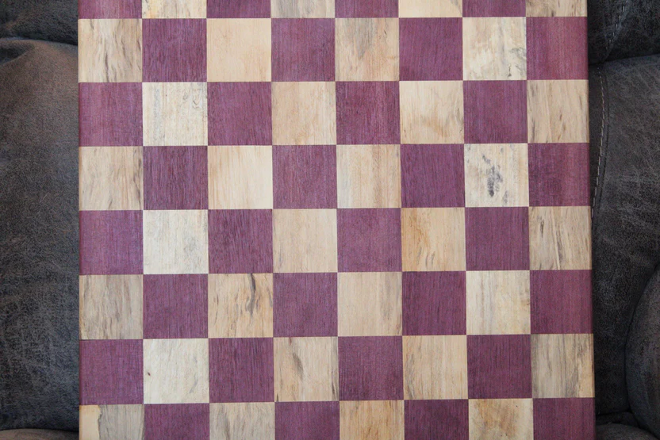
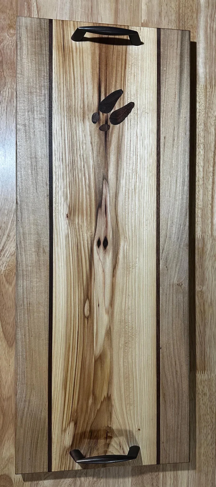
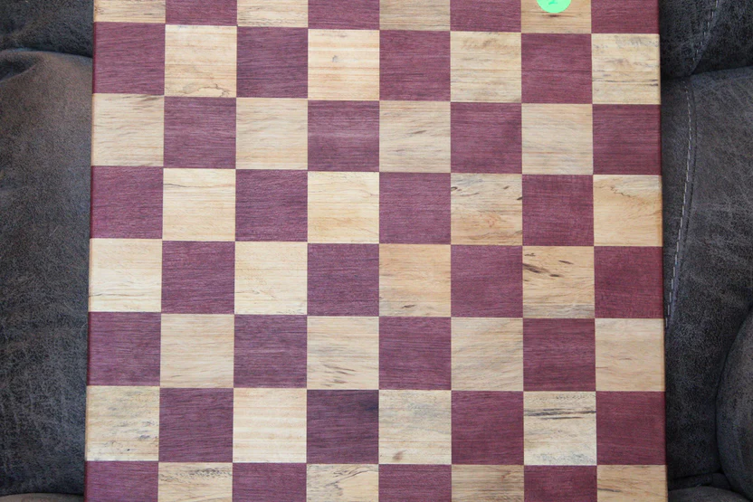
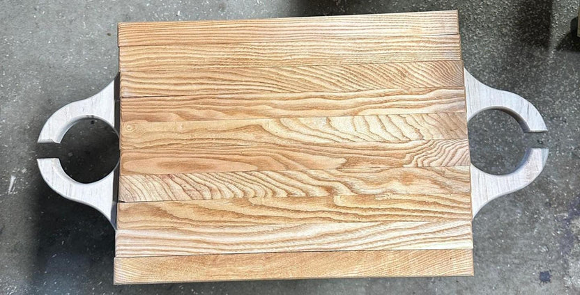
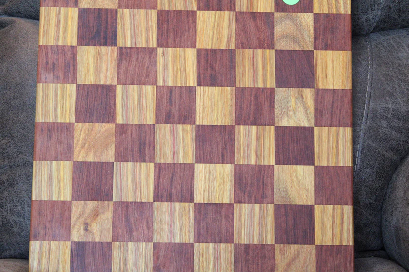
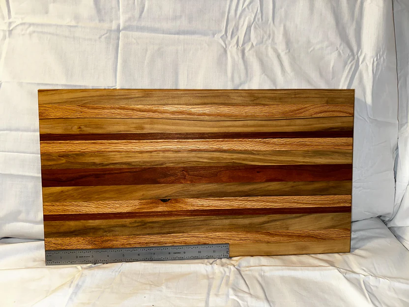
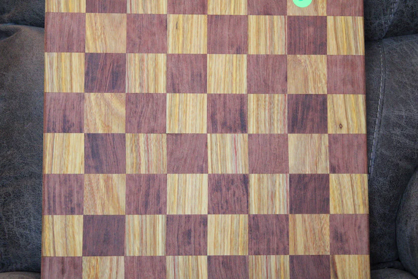